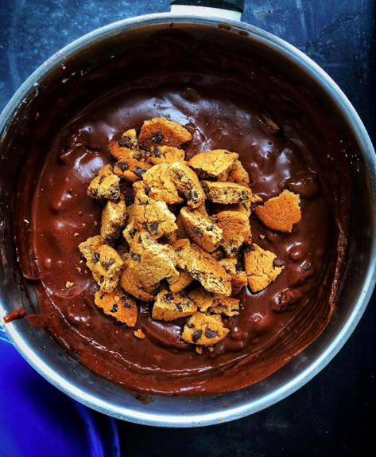

Küçükler oruç tutmaya baÅŸlayınca iftara daha da özenmeye baÅŸlayanlar? 🙋ğŸ»â€â™€ï¸ğŸ’™ Bu akÅŸam da sipariÅŸ üzerine Portakal Agaci Mutfağı’nda “Ev Yapımı Pudingli Mozaik Pasta†var. Üstelik bu sefer benim de yiyebildigim malzeme alternatifleri (glutensiz sekersiz cikolatali biskuvi, h.cevizi sekeri, siyez unu, org. misir nisastasi, org. kakao, org. cikolata) ile yaptim! 😍İftardan sonra kalacak olursa bitmis halini de paylasacagim.
Puding icin tereyagi ve vanilya haric tum malzemeleri karistirarak pisirin. Pisince tereyagi ve vanilyayi karistirin. Biraz soguyunca uzerine biskuvileri ve cevizleri kirin. Strec serilmis baton kaliba yayin (baton kalip yoksa strece yayip elinizle de rulo yapabilirsiniz.) Buzlukta dondurup servis yapin.